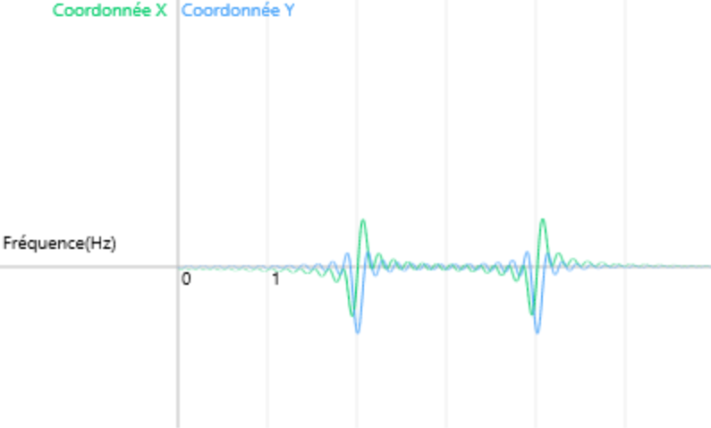

La compression, ou comment décrire un son autrement que par des points de données.
Spectre du son
On réécrit notre onde différement pour que son stockage soit moins volumineux. On n'écrit plus le son comme une suite de samples (points de pression de l'air par rapport au temps) mais comme une série de fréquences.
On ne décrit plus 30 points de données mais une seule fréquence.
On prend un signal audio brut, enregistré avec un microphone, et présentant un nombre important de samples. Puis on le décompose en fréquences en établissant son spectre. On peut résumer des milliers de points en quelques fréquences.
Le spectre d'un son est établi grâce à un outil créé par le physicien et mathématicien Joseph Fourier : la Transformation de Fourier.
Construisons la transformation
La Transformation de Fourier expliquée ici est surnommée DFT pour Discrete Fourier Transform ou Transformation de Fourier Discrète.
Le principe d'enroulement.
Prenons un signal pur de 1 Herz. L'idée générale de la Transformation de Fourier est d'enrouler ce signal sur lui-même.
Mathématiquement, nous traduisons cet enroulement par un vecteur rotatif changeant de taille et traçant notre figure. Ainsi quand à un instant t il y a un pic sur la courbe de gauche ci-dessous, alors notre vecteur rotatif à droite s'éloigne de l'origine. A l'inverse, il s'en rapproche quand il y a un creux sur l'onde.
On enroule plus ou moins ce signal sur lui même. Cela correspond à faire tourner le vecteur rotatif plus ou moins rapidement autour du cercle alors qu'il continue de tracer la même figure.
Faites varier le curseur rouge ci-dessus pour tester différentes vitesses de rotation du vecteur
Ce taux d'enroulement est traduit lui aussi par une fréquence : le nombre de tours sur lui-même du signal chaque seconde de signal, ou plus simplement, le nombre de cycles par seconde. Une fréquence d'enroulement de 1 cycle par seconde (1Hz) signifie que chaque seconde de signal sonore est enroulée une fois autour du cercle. 1/2 cycle par seconde (1/2 Hz) signifie que chaque seconde de signal est enroulée autour de la moitiée du cercle. Il faudra alors 2 secondes de signal pour faire le tour du cercle.
Il y a donc deux fréquences distinctes : La fréquence du signal d'origine et la fréquence d'enroulement autour du cercle.
La face cachée de l'enroulement
Le principe d'enroulement posséde une particularité : Lorsque la fréquence d'enroulement est identique à la fréquence du signal de départ, la figure se superpose et s'écarte soudainement de l'origine.
Faites varier le curseur rouge ci-dessus pour tester différentes fréquences d'enroulement
Cette particularité se retrouve quelles que soient les fréquences du signal, et quel que soit le nombre de fréquences dans le signal. Ainsi, avec un signal de départ résultant de l'addition des ondes pures de 2Hz et 4Hz, on obtient cette figure enroulée :
On observe encore que la figure se superpose aux fréquences d'enroulement de 2Hz de 4Hz. Nous pourrions vous donner la figure de gauche sans vous dire ses fréquences, et vous pourriez les retrouver en faisant varier le slider d'enroulement.
Pour résumer la figure enroulée, on calcule le centre de gravité de celle-ci. La plupart du temps, il reste proche de l'origine, mais lorsque la fréquence d'enroulement se superpose à l'une des fréquences du son initial, le centre de gravité s'éloigne de l'origine.
Suivre les déplacements du centre de gravité en fonction de la fréquence d'enroulement permet de représenter en un point à deux coordonnées le comportement global du signal enroulé.
La dernière étape de la DFT (Transformation de Fourier discrète) consiste à représenter la position de ce centre de gravité en fonction de la fréquence d'enroulement. Sur la courbe obtenue, on repère aisément la/les fréquences du signal.
La fréquence du signal sonore est de 1Hz

Fonction transformée du signal composé de fréquences de 2Hz et 4Hz. Les pics sont clairement visibles.
Conclusion
La DFT transforme un signal sonore g défini par g(t) (pression en fonction du temps), quelle que soit sa complexité, en une autre fonction ĝ(f) (coordonnées du centre de gravité en fonction de la fréquence d'enroulement).
Cette fonction ĝ nous permet de repérer les différentes fréquences du signal. On l'appelle le spectre du son.
L'étape suivante consiste à trouver l'équation mathématique correspondante.

 Il y a donc deux fréquences distinctes : La fréquence du signal d'origine et la fréquence d'enroulement autour du cercle.
Il y a donc deux fréquences distinctes : La fréquence du signal d'origine et la fréquence d'enroulement autour du cercle.